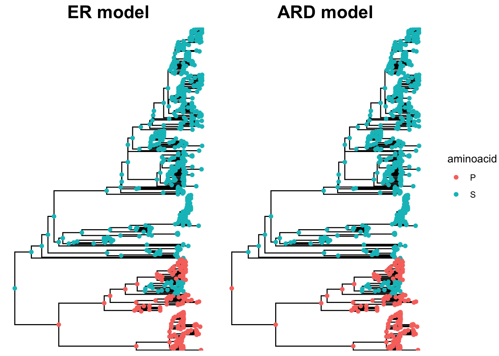

# rm(list=ls())
library(ape)
library(expm) # matrix exponential
library(ggtree)
library(ggplot2)
library(dplyr)
library(cowplot)
library(scatterpie)Fitting Markov models on trees using the ancestral character estimation (ace) function in R
Ancestral character estimation methods can be based on a variety of approaches, but we will consider Markov chains superimposed on phylogenies. In the accompanying code to this we will learn how to fit these models using Maximum Likelihood.
Ancestral Character Estimation: the ace function in R
To determine what the most likely evolutionary scenario was, we can use a mathematical model that describes change in the trait over time using a Markov chain with two states (corresponding to P and S). There are two versions of this model:
-Model 1: the rate of changing from P to S equals the rate of change from S to P (equal rates model, “ER”)
-Model 2: the rate from P to S can be different from the rate from S to P (all rates different model, “ARD”)
Let’s fit both of these models to the data using ace:
fit1 <- ace(x, tree, type='discrete', model='ER')
fit2 <- ace(x, tree, type='discrete', model='ARD')The type=‘discrete’ argument tells ace that our data at the tips (x) correspond to states of a discrete state-space Markov chain. The ace function can handle continuous data as well, but we will not make use of this.
We can examine the parameter estimates in each case:
fit1
Ancestral Character Estimation
Call: ace(x = x, phy = tree, type = "discrete", model = "ER")
Log-likelihood: -11.89298
Rate index matrix:
P S
P . 1
S 1 .
Parameter estimates:
rate index estimate std-err
1 9e-04 5e-04
Scaled likelihoods at the root (type '...$lik.anc' to get them for all nodes):
P S
0.2746174 0.7253826 The output above tells us what the structure of our Markov model is (Rate index matrix), as well as the value of the objective function (Log-likelihood) at the Maximum Likelihood paramter estimate (Parameter estimates). There is only one parameter estimated because we used an “equal rates” model. The estimate for the rate is a pretty small number, which makes perfect sense – while there is some evidence for a back mutation (from P to S), or possibly for \(\sim 4\) mutations from S to P, there seems to be a fairly small number of mutations overall. The rate estimate we are getting seems to make sense.
The last bit of the output is particularly salient for our question we began with: it tell us the “Scaled likelihoods at the root”, and assigns a higher value to S than to P. This means that, under this model, the ancestral virus most likely had the amino acid S rather than the amino acid P. This already tells us that, at least to the extent we think our Markov model is reasonable, the data seem more consistent with Hypotheses 1 or 3 than Hypothesis 2.
Okay, so far so good - but maybe I think the equal rates model is unreasonable to begin with. After all, it is a little bit striking that there is a huge clade in the phylogeny with no evidence of mutation from S to P whatsoever, but there does seem to be clear evidence of back-mutation from P to S. Maybe the rate of mutation from P to S is much faster than the rate from S to P. This is what our second model allows for. Let’s see how those estimates turned out:
fit2
Ancestral Character Estimation
Call: ace(x = x, phy = tree, type = "discrete", model = "ARD")
Log-likelihood: -10.28796
Rate index matrix:
P S
P . 2
S 1 .
Parameter estimates:
rate index estimate std-err
1 0.0000 0.0017
2 0.0036 0.0033
Scaled likelihoods at the root (type '...$lik.anc' to get them for all nodes):
P S
1 0 Oh my! That is rather striking! In this model we are estimating two rates (S to P, and P to S). The Maximum Likelihood Estimate (MLE) says that the rate from S to P equals zero. Nada. Zilch. The rate of change from P to S is 0.0036, which is quite a lot larger than the rate we estimated in Model 1. The Scaled likelihoods at the root say that the ancestor had amino acid P with certainty. So, if we think Model 2 is a reasonable model, then Hypothesis 2 is the best explanation for the evolutionary history. Under the model, the best explanation for the data is that the original virus had amino acid P, and there have been two mutations from P to S down to the present day.
In response to an estimated rate equal to zero, my knee-jerk reaction is to look at the standard errors (“std-err”) in the parameter estimates. Sometimes, numerical issues might result in weird behavior near the boundary of parameter space (rates are always non-negative, so zero is such a boundary in our case). The estimate for rate 1 has a standard error of 0.0017. If there had been some kind of numerical strangeness, we might see NA and a warning pop up. That didn’t happen here, so the MLE of 0.0000 for rate 1 appears to be genuine. It is also worth noting that the scaled likelihoods at the root are calculated under the MLE, and do not necessarily account for uncertainty in the MLE (as quantified by the standard errors). So, while our best estimate for the evolutionary history has P as the overall ancestor, a nonzero estimate for rate 1 might allow for a small possibility that the ancestral virus had S. That is, in the same way that we have a confidence set for our rate parameters, there is an implied confidence set of evolutionary histories, some of which have S at the root of the tree – but the scaled likelihoods at the root do not reflect this.
Displaying evolutionary histories with our fitted models
So far, all we have done is fit our models and interpret the parameter estimates. However, we can do a little bit more than this. Similar to NextStrain, we can annotate our tree with our estimated models to indicate what the ancestral states may have been. This is, after all, the point of ancestral state inference/ancestral character estimation.
The scaled likelihoods a the root that we see in the printout from fit1 and fit2 are built up from likelihoods at all of the internal nodes desending from the root. These are tucked away in the fitted model output (“lik.anc”):
head(fit1$lik.anc) P S
401 0.2746174 7.253826e-01
402 0.9810853 1.891467e-02
403 0.9998225 1.775022e-04
404 1.0000000 1.476925e-10
405 1.0000000 1.440331e-13
406 1.0000000 1.271426e-11This is a datarame with the scaled likelihoods of the two states for each node. The tree has 400 tips, so the nodes are numbered 401 through 799 (a bifurcating tree with N tips has N-1 internal nodes). Each row in the dataframe above is one of the nodes, and the values in the columns are the relative likelihoods that it resides in state P or state S under the MLE. We can use this data to plot estimated states at the internal nodes.
# Let's add in node labels for the tree:
tree$node.label <- (Ntip(tree)+1):(Ntip(tree) + tree$Nnode)
# what were the most likely node states?
nodestates1 <- c('P','S')[apply(fit1$lik.anc, 1, function(x) which(x==max(x)) )]
treedat1 <- data.frame(label=tree$tip.label, aminoacid = as.factor(x))
nodedat1 <- data.frame(label=as.character((Ntip(tree)+1):(Ntip(tree)+tree$Nnode)), aminoacid=nodestates1)
treedat1 <- rbind(treedat1, nodedat1)
p1 <- ggtree(tree) + ggtitle('ER model') +
theme(plot.title=element_text(hjust=0.5, size=18, face="bold"))
p1 <- p1 %<+% treedat1
p1 <- p1 + geom_tippoint(aes(col=aminoacid)) + geom_nodepoint(aes(col=aminoacid)) +
theme(legend.position='none')
# Now, the all-rates different model:
# what were the most likely node states?
nodestates2 <- c('P','S')[apply(fit2$lik.anc, 1, function(x) which(x==max(x)) )]
treedat2 <- data.frame(label=tree$tip.label, aminoacid = as.factor(x))
nodedat2 <- data.frame(label=as.character((Ntip(tree)+1):(Ntip(tree)+tree$Nnode)), aminoacid=nodestates2)
treedat2 <- rbind(treedat2, nodedat2)
p2 <- ggtree(tree) + ggtitle('ARD model') +
theme(plot.title=element_text(hjust=0.5, size=18, face="bold"))
p2 <- p2 %<+% treedat2
p2 <- p2 + geom_tippoint(aes(col=aminoacid)) + geom_nodepoint(aes(col=aminoacid))
legend <- get_legend(p2 + theme(legend.box.margin=margin(0,0,0,12)))
plot_grid(p1,p2+theme(legend.position='none'),legend, nrow=1, rel_widths=c(1,1,.3))
Aside from the differences at the root of the tree, the two models appear to mostly agree with each other in terms of the ancestral states of most of the other ancestors. However, the similarity in ancestral reconstructions belies the very different interpretations of the evolutionary histories between the models.
- In the ER model, mutations are possible in both directions under the MLE
- In the ARD model, mutations from S to P never occur under the MLE
- The ARD model makes the prediction that, given enough time, every virus we sample will have the amino acid S, and P will go extinct.
Which model is better supported by the data?
How do we decide which of these is more plausible? One way to try to address this is with a Generalized Likelihood Ratio test. The ER model (one estimated parameter in our example here) is a special case of the ARD model (two estimated parameters in our example here). Another way to put it is that the ER model is “nested” within the ARD model. This is precisely the condition under which we may apply the GLR test.
To carry out a GLR test, we calculate a test statistic obtained from the ratio of the two likelihoods, hence the name. Let’s look at the log-likelihoods for our two models:
fit1$loglik[1] -11.89298fit2$loglik[1] -10.28796You wil notice that the log-likelihood for the ARD model is larger than the log-likelihood for the ER model. This indicates that the ARD model fits the data better than the ER model. This makes perfect sense, because a model with more parameters should fit the data better than a model with fewer paramters.
The question is whether the improvement in model fit is meaningful, or whether we are overfitting to noise in the data.
The idea behind the GLR test is: if the the difference in log-likelihoods (or equivalently, the logarithm of the ratio of the likelihoods) is huge, then the improvement from the more complicated model is meaningful, i.e. not overfit. A small improvement in the fit of the model, as quantified by a marginally higher log-likelihood, indicates that we are adding more paramters/complexity to our model than is warranted.
From statistics, we know that provided we have a sufficiently large dataset, the quantity
\(\lambda_{LR} = -2 (l_{\text{ER}} - l_{\text{ARD}})\)
is approximately distributed according to a \(\chi^2\) distribution under the null hypothesis that data arise from the simpler model. The degrees of freedom for this \(\chi^2\) distribution is equal to the difference in the number of parameters between the models (so in our case, a single degree of freedom). Values of \(\lambda_{LR}\) that are huge are evidence against the null hypothesis. If we want to control type 1 errors at $5%, we may say that values of \(\lambda_{LR}\) landing above the \(95\%\)-ile of the distribution lead us to reject the null hypothesis. Recall that a \(p\)-value is the probability of observing a value of the test statistic as extreme or more extreme than the one we calculate.
So, to carry out a GLR test, we proceed as follows:
lambda <- -2 * (fit1$loglik - fit2$loglik)
lambda[1] 3.21004# we have one degree of freedom because the more complicated model has one more paramter than the simpler model:
dfs <- 1
# calculate the p-value, which is the probability of obseving a lambda as extreme or more extreme than the one we calculated above;
# chisq variables are always non-negative, and "extreme" in this case means large and positive -- so we want the upper tail probability,
# rather than the cumulative probability:
p <- pchisq(lambda, df=dfs, lower.tail=F)
p[1] 0.07318772So, we have a p-value equal to 0.073. Most people would say that there is not sufficient evidence to reject the null hypothesis (ER model) in favor of the alternative (ARD model) based on this.
In other words, there is not strong evidence to support unidirectional change in amino acids.
All of these conclusions are conditional on the Markov models we are using. Remember: junk in = junk out.
These conclusions are totally contingent upon the confidence we do (or do not have) in these models.
There are some potential pitfalls of these models that we should articulate now:
Either of these amino acids could carry a fitness benefit that could lead to increased numbers of infections by one lineage or the other. We are not modeling this effect
The models are assuming that rates are constant in time. This may not be a reasonable assumption to make.
Can you think of any other criticisms?
These criticisms aside, from the methodological point of view there is another thing we have not done: we have not obtained an estimate for when mutations actually occurred. Our estimates of ancestral states should inform the timing and number of mutations, but more work is needed to do so.
In a later section (stochastic character mapping), we will do both of these things.